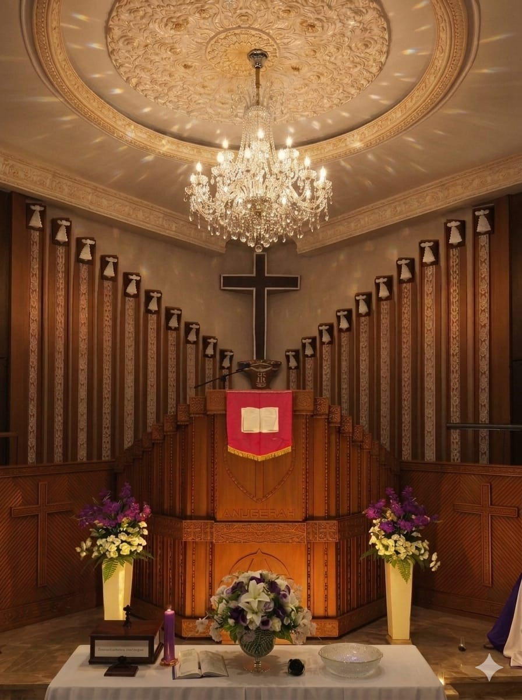

Tentang Kami
Mengenal KGPM Sidang Anugerah Malalayang.
Profil Gereja
Menjadi Jemaat yang Bertumbuh dan Melayani
KGPM Sidang Anugerah Malalayang adalah persekutuan jemaat yang rindu hidup dalam kasih Kristus, membangun iman, dan menjadi berkat bagi sesama.
Visi
Menjadi gereja yang bertumbuh dalam iman, kuat dalam persekutuan, dan nyata dalam pelayanan.
Misi
- Memberitakan Injil dan membina iman jemaat.
- Mengembangkan pelayanan kasih bagi sesama.
- Mendorong keterlibatan jemaat dalam pembangunan gereja.
- Membina anak, pemuda, keluarga, dan lansia.
